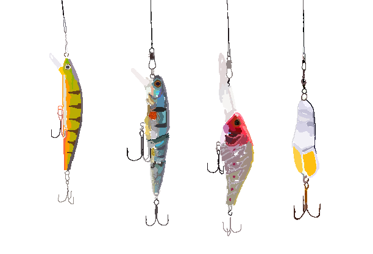

Платні риболовні місця Вінниччини
Під значенням платне риболовне місце прийнято вважати не тільки водойми, на яких платний вилов риби, а й ті, для потрапляння на які необхідно заплатити. До останніх можна віднести водойми, які знаходяться на територіях баз відпочинку. В таких місцях чітко встановлені правила вилову риби, наприклад, людина може ловити тільки певну кількість риби, а потім повинна або доплачувати, або взагалі переставати ловити.
На таких місцях є чітко регульовані правила перебування. Наприклад, деякі клуби забороняють використовувати багато вудочок, а натомість керуються правилом "1 людина на 1-2 вудочки". Проте, заборон не так багато як може здаватися, вони в цілому є такими ж, як і на безкоштовних водоймах, тобто регульовані місцевою владою.
Платні місця це також клуби спортивного рибальства або просто риболовні місця, де ловля риби за кошти. В першому випадку люди приходять, платять гроші за вхід і ловлять рибу з подальшим відпусканням її назад до водойми (риба в такому випадку може бути викупленою за окремі кошти, якщо відвідувач не хоче її відпускати). На місцях з платним виловом, люди платять за кількість або вагу риби яку вони виловили. Все це контролюється охороною або безпосереднью тими, хто володіє водоймою.
На таких водоймах також поширена практика орендування снастей чи човнів. Відвідувач може заплатити окремі кошти для того щоб взяти спінінг, вудочку чи навіть човен на певний час. Після закінчення часу оренди людина має повернути орендоване майно назад. Також в таких місцях можна купити абонемент на на перебування на водоймі, тобто відвідувачеві не потрібно платити кожен раз як він приходить на водойму, а лише один раз.
На платних водоймах дуже розповсюджені змагання по вилову риби, тобто коли рибалки намагаються зловити якнайбільшу рибину або нійбільшу її кількість. Такі змагання проводяться з поперднім внеском з кожного учасника. Це робиться для того, щоб додати грошей в призовий фонд, який в кінці замагнь буде поділено між переможцями. Іноді, за перемогу в змаганнях учасники отримують не гроші, а якісь призи від самого клубу, наприклад, абонементи на відвідування протягом деякого часу, снасті, риболовний одяг, тощо.